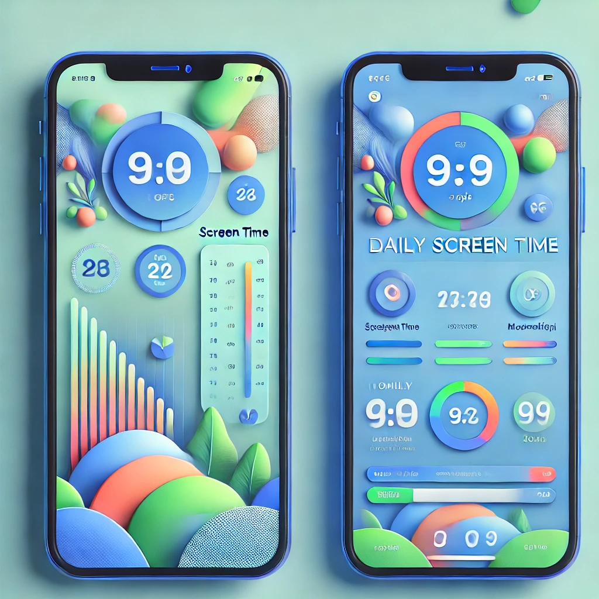

Redesigned Feature
Explore a redesigned version of a frustrating feature from an existing application. This new design prioritizes usability and user experience.
Original Design
The original design has issues with accessibility, poor navigation, and unclear visual hierarchy.
Redesigned Version
The redesigned version improves navigation, visual hierarchy, and includes accessible design elements.
Why This Redesign Works
- Improved Navigation: Clear and prominent navigation buttons reduce confusion.
- Accessibility Enhancements: Added contrast, larger fonts, and screen-reader-friendly elements.
- Modern Aesthetic: Clean, minimalistic design improves the visual experience.
- Enhanced User Flow: Logical placement of elements ensures a smoother user experience.